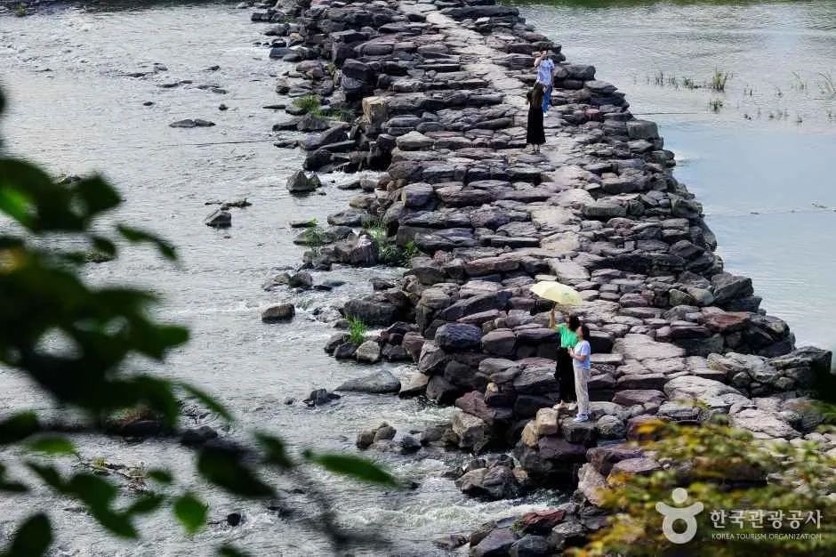
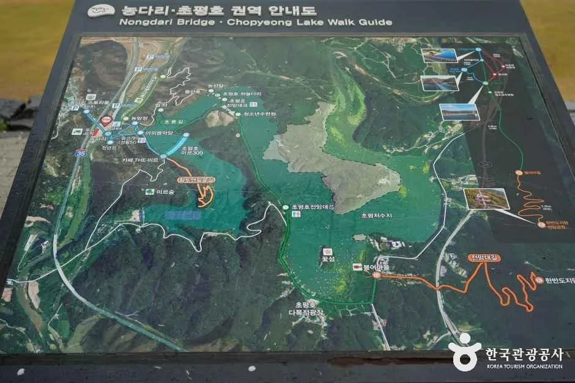
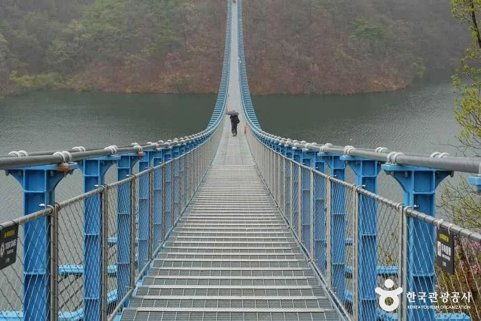
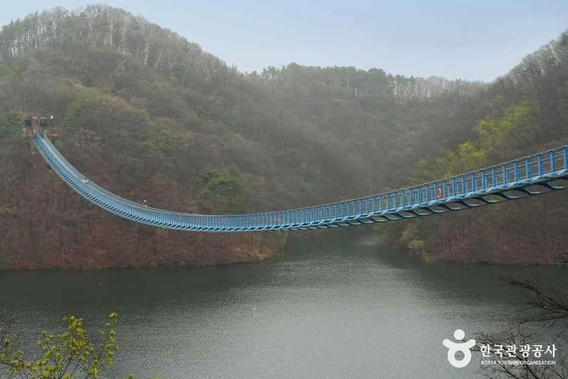
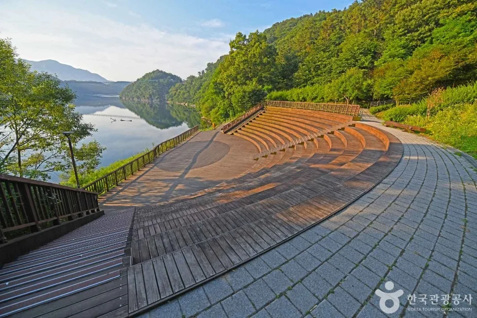
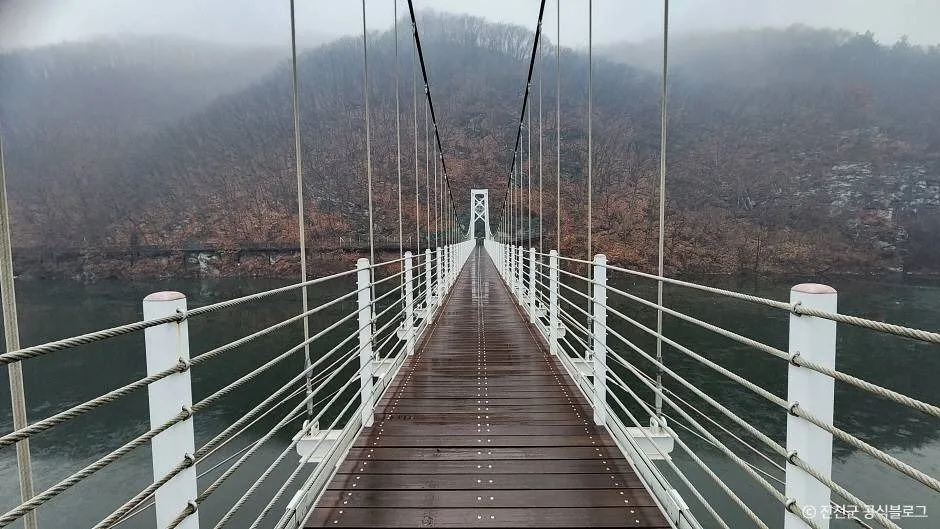
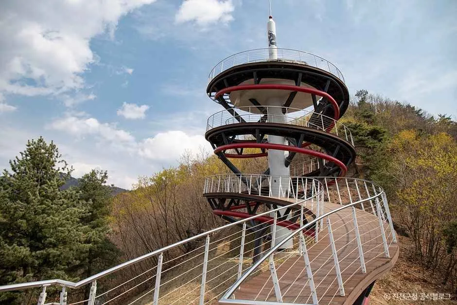
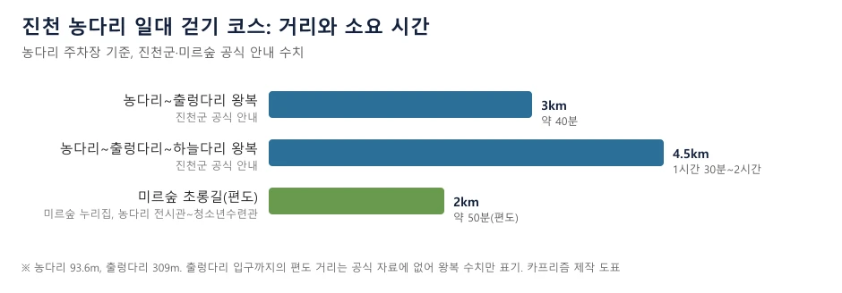

▲ 농다리 일대의 물가와 바위 지형. 촬영 시기는 확인하지 못했다. 사진=한국관광공사
"차는 어디에 세우고, 얼마나 걸을까." 충북 진천 초평면·문백면 경계의 농다리와 초평호 미르309 출렁다리는 한곳에서 걸어서 이어진다. 진천군 공식 안내로는 농다리 주차장에서 출렁다리까지 왕복 약 3km, 약 40분이고, 하늘다리까지 이으면 왕복 약 4.5km에 1시간 30분~2시간이다. 주차장 요금(일반 차량 4,000원)과 개방 시간, 기상특보 때 진입 금지 같은 규칙은 진천군 누리집, 미르숲 누리집, 한국관광공사 TourAPI를 직접 열어 확인했다. 이 글은 확인한 값만 쓰고, 확인하지 못한 항목은 그렇게 밝힌다.
💡 먼저 확인한 것 세 가지
① 주차 요금: 진천군 농다리 안내에는 일반 차량 4,000원, 버스 8,000원, 장기 주차(12시간) 50,000원, 카드 결제만 가능이라고 적혀 있다. 한편 미르숲 누리집 주차안내에는 요금표 없이 '농다리 전시관 주차장 또는 농다리 주차장 이용'만 적혀 있고, 예전 요금표(평일 2시간 무료 등)는 화면에 보이지 않게 처리돼 있다. 일부 여행 블로그는 '30분 이내 출차 무료'라고 쓰지만 군 공식 안내에는 무료 시간이 없다. 이 글은 진천군 안내의 금액만 쓰고, 무료 시간이 있는지는 확인하지 못했다고 표시했다.
② 일몰 후 입장 불가: 농다리는 일몰 후 입장할 수 없고 조명 시설도 없다. 미르숲도 일출 전과 일몰 후 이용을 삼가라고 안내한다.
③ 11월부터 마감이 당겨진다: 출렁다리는 3~10월 09:00~18:00, 11~2월 09:00~17:00이고 입장 마감은 운영 종료 30분 전이다. 오늘(10월 8일)은 하절기 시간이다.
1. 한눈에 보기 — 명소별 개방·요금·주차·걷기
| 명소 | 개방·요금 | 주차 | 걷는 거리·시간 |
|---|---|---|---|
| 농다리(길이 93.6m) | 휴관일 없음, 일몰 후 입장 불가, 입장료 항목은 군 안내에 없음 | 농다리 주차장(유료, 아래 표) | 농다리~출렁다리 왕복 약 3km, 약 40분 |
| 초평호 미르309 출렁다리(309m) | 3~10월 09:00~18:00(마감 17:30), 11~2월 09:00~17:00(마감 16:30), 무료, 반려견 동반 불가 | 농다리 주차장 또는 초평호 다목적광장(초평면 평화로 482) | 농다리~출렁다리~하늘다리 왕복 약 4.5km, 1시간 30분~2시간 |
| 미르숲 | 상시 개방, 무료, 일출 전·일몰 후 이용 삼가 | 농다리 주차장 이용(내비 주소 문백면 구산동리 126) | 초롱길 편도 약 2km, 약 50분(미르숲 누리집) |
| 초평호 하늘다리 | 상시 개방(TourAPI) | 주차 불가(TourAPI), 농다리 쪽에서 걸어가는 방식 | 농다리~출렁다리~하늘다리 왕복 약 4.5km 코스에 포함 |
| 한반도지형전망공원 | 상시 개방, 12~2월과 기상특보 시 진입 금지(TourAPI) | 약 30대(TourAPI) | 농다리와는 별도 지점. 직선거리 약 3.6km(좌표 계산) |
| 농다리 스토리움 | 월요일 휴관, 09:00~17:00, 무료 | 농다리 주차장 | 주차장 옆 전시관 |
표의 직선거리는 한국관광공사 좌표를 단순 계산한 값이고, 자동차로 가는 도로 거리와 시간은 공식 자료에서 확인하지 못했다. 내비게이션에는 진천군이 안내하는 대로 '농다리 스토리움'(진천군 문백면 농다리로 1032-11)을 찍고 농다리 주차장을 이용하면 된다. 진천군 농다리 안내 바로가기
▲ 농다리 일대의 물가와 바위 지형. 촬영 시기는 확인하지 못했다. 사진=한국관광공사
2. 주차와 가는 길 — 내비 검색어·요금·대중교통
농다리 주차장 정보는 진천군 농다리 안내가 가장 구체적이다. 요금은 아래와 같고, 주차장 안에서 시간대별로 요금이 달라지는지는 군 안내에 적혀 있지 않았다.
| 항목 | 내용 |
|---|---|
| 일반 차량 | 4,000원 |
| 버스 | 8,000원(버스는 제1주차장만 이용 가능) |
| 장기 주차(12시간) | 50,000원 |
| 할인 | 장애인·국가유공자·친환경 차량·경차 50% 할인. 진천군민은 평일 무료, 주말 50% 할인 |
| 결제 | 카드 결제만 가능 |
| 임시주차장 | 주말과 공휴일에만 이용 가능 |
| 금지 | 갓길·인도·잔디 주차 절대 금지, 즉시 견인 |
미르숲 누리집 주차안내(10월 8일 확인)는 내비 주소(문백면 구산동리 126)와 '농다리 전시관 주차장 또는 농다리 주차장 이용'만 안내하고 요금·개방 시간·무료 시간은 싣지 않았다. 이 페이지 소스에 남은 옛 요금표(평일 06:00~18:00·주말 06:00~20:00, 평일 2시간·주말 1시간 무료)는 면수 칸이 '0000대'로 비어 있고 화면에는 나오지 않아 채택하지 않았다. 군 안내에는 주차장 개방 시간도 적혀 있지 않다. 출발 전에 진천군 문화유산팀 043-539-4082에 요금과 무료 시간을 확인하는 것이 안전하다.
| 출처 | 안내 |
|---|---|
| 진천군 농다리 안내 | 전용 무료 셔틀버스 없음. 진천터미널에서 문백 방면 시내버스를 타고 "중리" 정류장 하차. 시간표는 진천여객 043-533-1501 |
| 미르숲 누리집 | 진천종합버스터미널에서 통산·안능 방면 시내버스 탑승 후 "진천농교" 하차(소요 15분 내외), 서울→진천 시외버스 35회·청주→진천 51회 운행으로 안내 |
| 확인하지 못한 것 | 정류장에서 농다리 입구까지 걷는 거리, 현재 운행 시각표 |
✅ 주차 체크
· 내비: 농다리 스토리움(문백면 농다리로 1032-11) 검색 후 농다리 주차장
· 일반 차량 4,000원(군 안내), 카드만 가능
· 갓길·인도·잔디 주차 즉시 견인
· 출렁다리가 혼잡할 때 군은 인근 황토맨발숲길 이용을 권한다
3. 농다리 — 붉은 돌을 쌓은 93.6m
한국관광공사 정보에 따르면 진천 농다리는 사력 암질의 붉은 돌을 쌓아 만든 다리로 28칸의 교각이 있다. 지방유형문화재로 소개되고 길이 93.6m, 폭 3.6m, 교각 높이 1.2m 정도이며, 석회 등을 바르지 않고 쌓았는데도 장마에 유실되지 않았다고 한다. 고려 초엽 권신 임 장군이 놓았다는 전승이 있다. 이는 소개 문장 그대로의 전승이며 학술적으로 확정된 연대는 확인하지 못했다.

▲ 돌을 쌓아 만든 농다리 교각 위의 길. 촬영 시기는 확인하지 못했다. 사진=한국관광공사
진천군 안내가 강조하는 이용 규칙은 세 가지다. 휴관일은 없지만 일몰 후에는 입장할 수 없고 조명 시설이 없으며, 호우·태풍 등 기상특보가 발효되면 진입이 금지된다. 입장료 항목은 군 안내에 없었다. 다리 옆 농다리 스토리움은 월요일 휴관, 09:00~17:00, 무료이고 프롤로그와 전시실 4관(역사·과학·사람·체험), 브릿지, 특별전시실 1관으로 이뤄져 있다. 농다리 스토리움 안내 바로가기
2026년 생거진천 농다리축제는 한국관광공사 행사 정보로 4월 4일부터 26일까지 열렸고(입장료 무료, 주차장 유료), 이미 끝났다. 가을 개최 정보는 확인하지 못했다.

▲ 농다리·초평호 일대 걷기 코스를 그린 안내판. 판의 상세 글자는 사진에서 읽지 못했다. 사진=한국관광공사
4. 초평호 미르309 출렁다리 — 309m, 무료, 기상특보 땐 통제
진천군 안내에 '미르'는 용, '309'는 총길이 309m를 뜻한다. TourAPI에는 개통일이 2024년 4월 12일로 올라 있다. 입장료는 무료이고 휴관일은 없다. 운영 시간은 3~10월 09:00~18:00, 11~2월 09:00~17:00이며 입장 마감은 운영 종료 30분 전이다. 호우·태풍·강풍 등 기상특보가 발효되면 진입이 금지되고, 반려견은 동반할 수 없다. 문의는 진천군청 문화관광과 관광팀 043-539-3622~5다. 미르309 출렁다리 안내 바로가기

▲ 출렁다리 위에서 앞쪽을 바라본 모습. 촬영 시기는 확인하지 못했다. 사진=한국관광공사

▲ 호수 위에 걸린 출렁다리를 멀리서 본 모습. 촬영 시기는 확인하지 못했다. 사진=한국관광공사
⚠ 최근 통제 이력
뉴스핌은 8월 20일 보도에서 진천군이 미르숲 낙석방지망 설치 공사로 8월 24일부터 9월 21일까지 약 한 달간 출렁다리 진입로 일부 구간을 통제하고, 야외음악당~하늘다리~출렁다리를 잇는 우회로로 출렁다리와 황토맨발숲길은 이용할 수 있다고 전했다. 군 공지 원문은 열어 보지 못했고, 기간은 이미 끝났다. 10월 현재 연장 또는 새 통제 공지는 검색으로 찾지 못했지만 '없다'는 뜻은 아니므로 출발 전 관광팀 043-539-3622 또는 산림녹지과 043-539-3588로 확인하자.
5. 미르숲과 하늘다리 — 걷는 길을 고르는 법
미르숲은 현대모비스 사회공헌으로 조성된 숲으로, 한국관광공사 소개 기준 기원의 숲·생각의 숲·붉은 바위의 숲·요정의 숲·거울의 숲·약속의 숲 6개 테마다. 미르숲 누리집은 상시 개방, 이용 요금 없음, 일출 전·일몰 후 이용 삼가, 전 지역 금연·취사 금지, 미르숲 권역 일반 차량 진입 금지를 안내한다. 미르숲 방문안내 바로가기
| 코스 | 경로 | 공식 설명 |
|---|---|---|
| 초롱길 | 농다리 전시관 - 농다리 - 살고개 - 현대모비스 야외음악당 - 수변데크 - 하늘다리 - 청소년수련관 | 가장 걷기 편한 길, 편도 약 2km, 약 50분 |
| 농암정 등산길 | 농다리 전시관 - 농다리 - 농암정 - 등산로 - 하늘다리 | 오르내림이 있는 코스, 하늘다리로 이어짐 |
| 붉은바위 임도길 | 농다리 전시관 - 농다리 - 야외음악당 - 붉은바위 쉼터 - 굴피나무 쉼터 - 미호천 전망대 - 징검다리 - 농다리 전시관 | 등고가 적은 순환형 임도 |
| 미호천 메타세콰이어 길 | 농다리 전시관 - 농다리 - 폭포 - 메타세콰이어 길 - 미호천 전망대 - 징검다리 | 미호천변 길, 물새·산새 관찰 |

▲ 미르숲 일대 호수 옆 수변 데크로 소개된 사진. 어느 코스인지는 확인하지 못했다. 사진=한국관광공사
하늘다리는 초평호 수변데크 끝 지점의 보행 전용 다리로, TourAPI 기준 상시 개방이고 주차는 불가능하다. 미르숲 누리집 주변시설 안내에는 하늘다리를 건너면 군이 노인일자리 사업으로 운영하는 작은 카페가 있고 토요일까지 주 6일 운영한다고 나온다. 가격과 영업 시간은 확인하지 못했다. 현대모비스 자연생태교육관은 누리집 시설안내에 현재 운영 시간이 적혀 있지 않다(주말 10:00~17:00 임시 운영·주중 사전 예약이라는 옛 문구는 화면에 보이지 않게 처리돼 있다). 그래서 지금 열려 있는지는 확인하지 못했다. 교육관은 043-537-8106, 미르숲 관리 부서인 진천군청 산림녹지과는 043-539-3588로 문의하면 된다.

▲ 초평호 하늘다리로 소개된 사진. 안개 낀 날의 모습으로 보이며 촬영 시기는 확인하지 못했다. 원본 이미지에 '진천군 공식블로그' 표기가 있다. 사진=한국관광공사
6. 한반도지형전망공원 — 14.5m 전망탑, 겨울엔 진입 금지
한국관광공사 소개로는 두타산(598m) 삼형제봉에서 초평호를 내려다보면 한반도와 제주도 모양이 보인다고 한다. 약 14.5m 탑 모양 전망대가 있고, TourAPI 기준 상시 개방이지만 동절기(12월~2월)와 기상특보 때는 진입이 금지된다. 주차는 약 30대다. 농다리 주차장에서 이곳으로 가는 길과 시간은 공식 자료에 없고, 좌표상 직선거리만 약 3.6km다. 지금(10월)은 개방 기간에 속한다.

▲ 한반도지형전망공원의 전망 탑. 촬영 시기는 확인하지 못했고, 원본 이미지에 '진천군 공식블로그' 표기가 있다. 사진=한국관광공사
▲ 높은 곳에서 본 초평호의 반도 모양 지형. 소개 사진으로 촬영 시기는 확인하지 못했고, 원본 이미지에 '진천군 공식블로그' 표기가 있다. 사진=한국관광공사
초평호 자체에 대한 진천군 안내는 이렇다. 미호천 상류를 막은 영농 저수지로 충북에서 가장 큰 저수지로 소개되고(저수량 1,378만 톤), 현재 댐은 1982년 착공해 1986년 준공했다. 입장료는 없고, 군 안내의 주변 명소에는 농다리가, 음식점에는 송애집이 올라 있다. 주변 숙박 시설 이름도 있지만 현재 영업 여부는 확인하지 못했다. 진천군 초평호 안내 바로가기
7. 추천 반나절 동선 — 공식 거리로 짠 3가지

▲ 공식 안내의 걷기 거리와 시간. 출렁다리까지의 편도 거리는 자료에 없어 왕복 수치만 표기했다. 카프리즘 제작 도표
| 동선 | 공식 수치 | 비고 |
|---|---|---|
| A. 가볍게 출렁다리까지 | 농다리 주차장~출렁다리 왕복 약 3km, 약 40분 | 농다리 건너기와 스토리움 관람 시간은 별도 |
| B. 하늘다리까지 이어 걷기 | 농다리~출렁다리~하늘다리 왕복 약 4.5km, 1시간 30분~2시간 | 하늘다리 쪽엔 주차 불가, 되돌아오는 시간 포함 수치 |
| C. 미르숲 초롱길 | 편도 약 2km, 약 50분 | 농다리 전시관에서 청소년수련관까지, 되돌아올 방법은 별도 계획 필요 |
식사는 한국관광공사 TourAPI에 올라 있는 곳만 적는다. 둘 다 자동차로 가는 길은 확인하지 못했고, 직선거리는 좌표 계산값이다.
| 식당 | 대표 메뉴 | 영업·휴무 | 주차 | 농다리에서 직선 |
|---|---|---|---|---|
| 송애집(초평면 초평로 1051-5, 백년가게) | 붕어찜, 메기찜, 메기매운탕, 닭볶음탕 | 11:00~18:00, 연중무휴(변경 가능, 전화 043-532-6228) | 약 40대 | 약 2.6km |
| 들녘애농원(문백면 농다리로 1294) | 친환경삼색쌀밥정식, 들깨두부전골 | 10:00~20:00, 준비 15:00~17:00, 점심 마지막 주문 14:30, 매주 월요일 휴무 | 가능 | 약 2.9km |
8. 계절 주의사항과 이어 가기
공식 안내에서 확인한 가을·겨울 변수는 세 가지다. 첫째, 11월부터 출렁다리 운영이 09:00~17:00로 줄어 마지막 입장이 16:30이 된다. 둘째, 일몰 후에는 농다리와 미르숲 모두 이용하지 말라는 안내가 있다. 셋째, 한반도지형전망공원은 12월~2월 진입이 금지된다. 이 일대 단풍 절정 시기는 확인한 공식 자료가 없어 적지 않았다. 전국 단위 단풍 예측은 산림청 공식 단풍 지도 기사와 단풍 절정 예측 드라이브 가이드에서 볼 수 있다. 연휴 도로 상황은 단풍철 고속도로 출발 시각 기사를 참고하자.
| 기사 | 다른 점 |
|---|---|
| 세종 초정약수축제 가이드 | 10월 16~18일 축제 중심, 인접 충청권 일정으로 묶기 좋음 |
| 청주 산림박람회·영동 정원박람회 코스 | 청주권 박람회 두 곳을 하루에 도는 자차 코스 |
| 보은 대추축제·속리산 단풍 | 축제와 단풍을 함께 보는 충북 기사 |
| 괴산 고추축제 | 충북 괴산의 농특산물 행사 기사 |
| 청양 천장호 출렁다리 | 207m, 주탑이 있는 출렁다리와 비교 |
| 논산 탑정호 출렁다리 | 600m 호수 위 보행 다리 기사 |
✅ 출발 전 체크리스트
· 내비: 농다리 스토리움(문백면 농다리로 1032-11) → 농다리 주차장, 일반 차량 4,000원(군 안내), 카드만
· 출렁다리 3~10월 09:00~18:00(마감 17:30), 11월부터 09:00~17:00, 무료, 반려견 불가
· 기상특보 땐 농다리·출렁다리 진입 금지, 일몰 후 농다리 입장 불가
· 걷기: 출렁다리 왕복 약 3km(40분), 하늘다리까지 왕복 약 4.5km(1시간 30분~2시간)
· 확인 못 한 것: 도로 거리·소요 시간, 주차 무료 시간, 미르숲 자연생태교육관 현재 개방, 가을 단풍 시기
· 문의: 진천군 관광팀 043-539-3622, 문화유산팀 043-539-4082
9. 정리
농다리 주차장에 차를 세우면(군 안내 일반 차량 4,000원) 농다리·미르숲·출렁다리를 걸어서 이을 수 있고, 출렁다리까지는 왕복 약 3km에 약 40분, 하늘다리까지는 왕복 약 4.5km에 1시간 30분~2시간이다. 출렁다리(309m)는 무료이고 3~10월 09:00~18:00, 11월부터 17:00까지 연다.
농다리는 일몰 후 입장 불가, 기상특보 때는 진입 금지다. 주차 무료 시간(군 안내에 없음), 도로 거리·소요 시간, 미르숲 자연생태교육관 현재 개방, 가을 단풍 시기는 공식 자료로 확인하지 못했으니 출발 전 진천군 관광팀에 문의하자.